class: center, middle # Building a Production App with React Native  March 4, 2016 @ ReactNative NYC Meetup by Tom Goldenberg #### Twitter: @tomgoldenberg --- # How we started -- <div style="display: flex; justify-content: center; align-items: center;"> <img style="margin-right: 15px;" height="200" src="https://avatars1.githubusercontent.com/u/10930134?v=3&s=400"/> <img style="margin-left: 15px;" height="200" src="https://media.licdn.com/media/AAEAAQAAAAAAAAUcAAAAJDBhNWY0NDZiLWQ2YjYtNDFmYS05NjBkLWI3NzZmN2ZjZDA3Yg.jpg"/> </div> <div style="display: flex; justify-content: center; align-items: center;"> <span style="margin-right: 15px; text-align: center; width: 200px;">Tom Goldenberg</span> <span style="margin-left: 15px; text-align: center; width: 200px;">Nicholas Alan Brown</span> </div> --- # Early Prototype -- 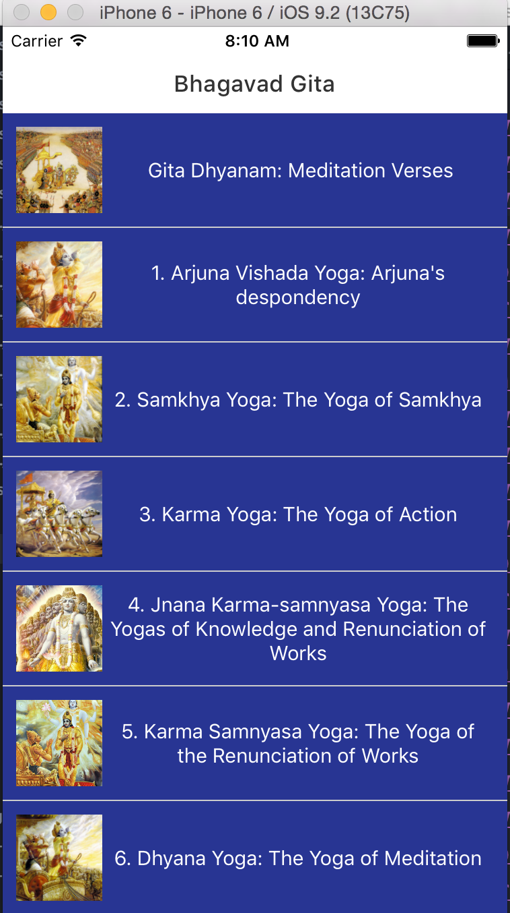 --- 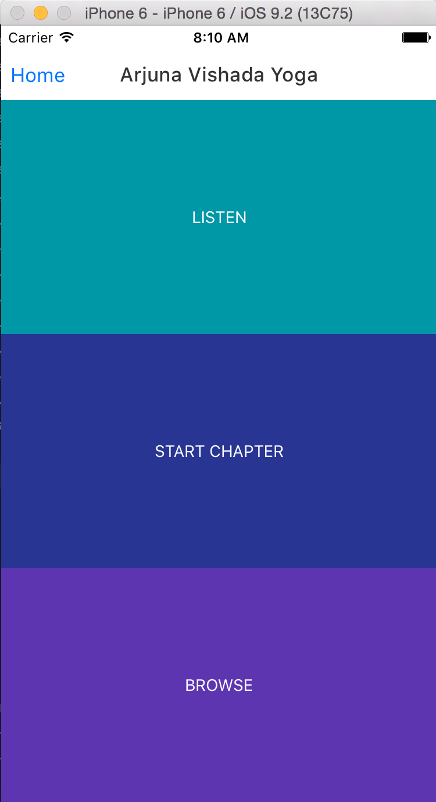 --- 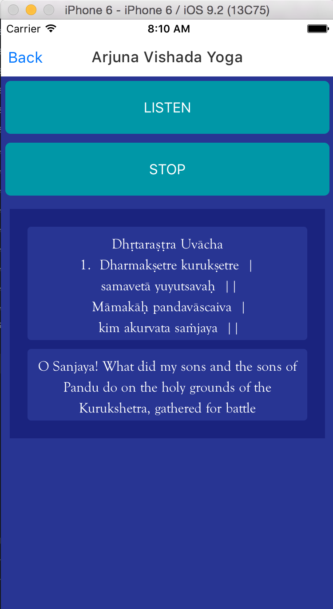 --- 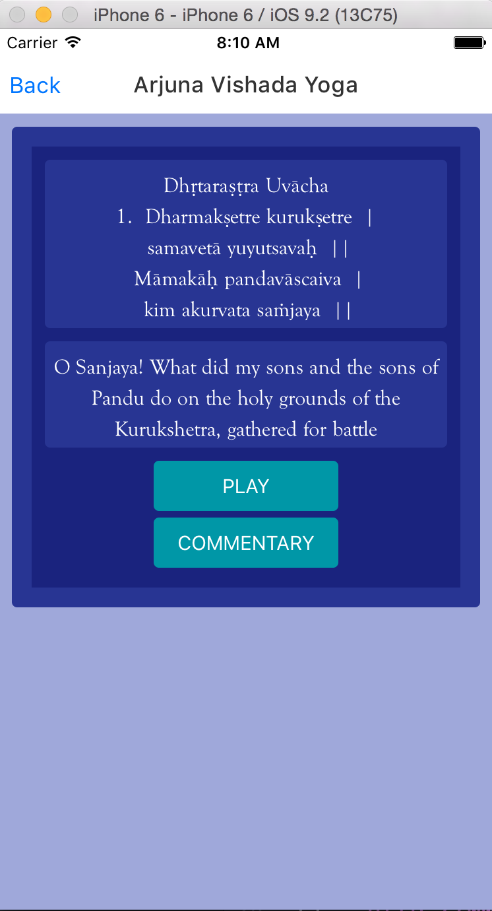 --- 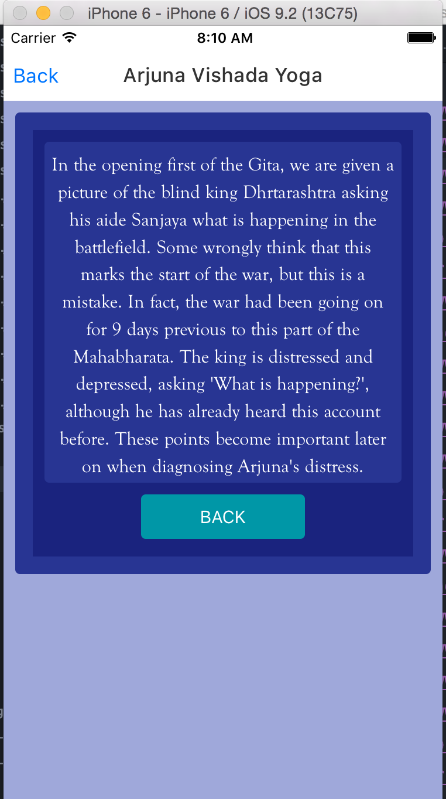 --- 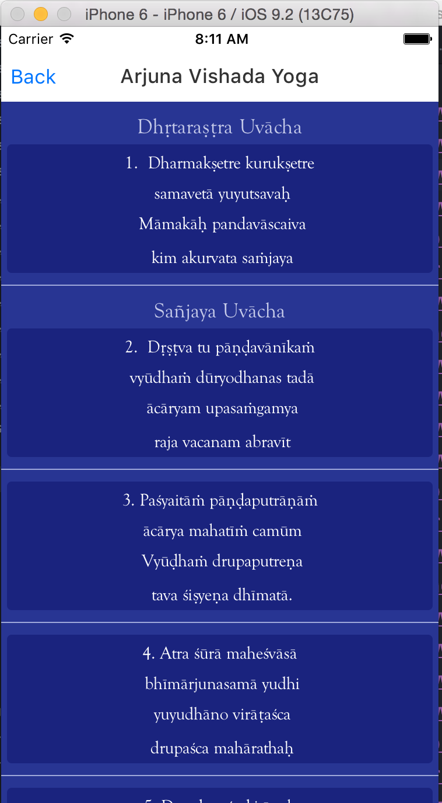 --- # Nick's wireframes -- 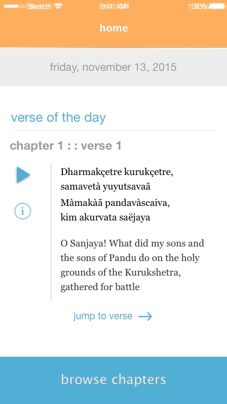 --- 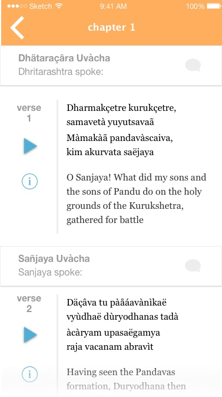 --- 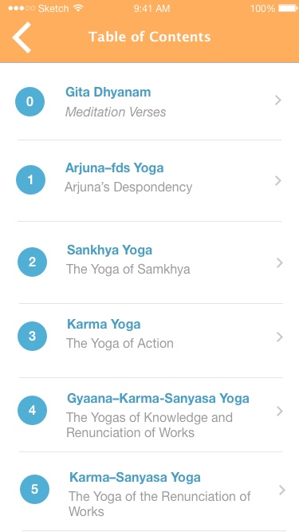 --- # Desired Features -- <p class="left">1. Favorites</p> -- <p class="left">2. Onboarding sequence</p> -- <p class="left">3. Modal Commentary</p> -- <p class="left">4. Social Sharing</p> -- <p class="left">5. Verse of the Day</p> -- <p class="left">6. Easy to navigate chapters</p> -- <p class="left">7. Go to Verse Linking</p> --- # Final Product -- 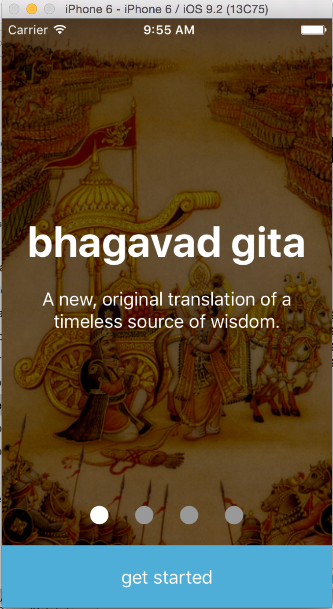 --- 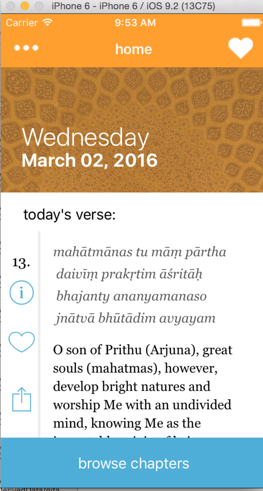 --- 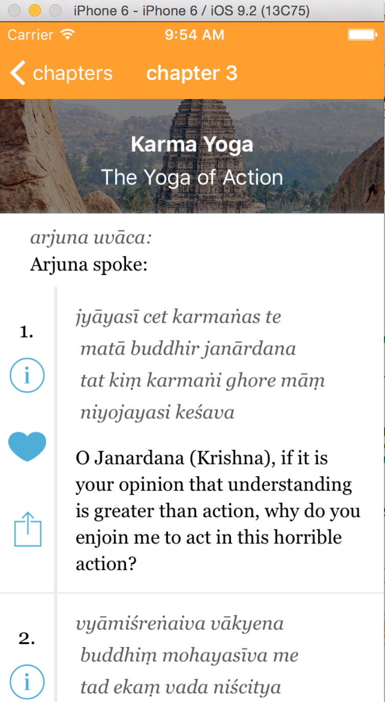 --- # Some hacky solutions for ListView <pre><code> renderRow(rowData, sectionID, rowID){ return ( <Animatable.View onLayout={(event) => { let height = event.nativeEvent.layout.y; this.rows[key] = height; if (specificVerse && verseNumber == specificVerse.verse) { this.setState({ready: true,}); this._scrollToVerse(); } }} } </code></pre> --- # Async Storage <pre><code> _goToFavorites(){ this.refs.nav.push({ component : Favorites, title : 'Favorites', passProps: { openModal : this.openModal.bind(this), favorites : this.getFavorites.bind(this), setFavorite : (isFavorite, key, favorites)=> { favorites[key] = isFavorite; AsyncStorage.setItem(FAVORITES_KEY, JSON.stringify(favorites)); this.setState({favorites: favorites}) }, } }) } </code></pre> --- # Some Helpful Resources and Packages -- <p class="left"> 1. Brent - scene transition for onboarding </p> -- <p class="left"> 2. Bridging Native Modules for SDKs </p> -- <p class="left"> 3. `react-native-animatable` </p> -- <p class="left"> 4. ListView wizardry </p> --- ## Demo --- # Check us out! - (and like us in the App Store :))  ## Twitter - @tomgoldenberg ## website - [bhagavadgitaapp.com](bhagavadgitaapp.com) ---